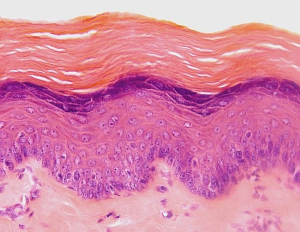

¿Qué tipo de epitelio son estos y cuál es su especialización?

Plano simples queratinizado
Plano extratificado paraqueratinizado
Cilíndrico plano con microvilosidades
Cúbico extratificado queratinizado